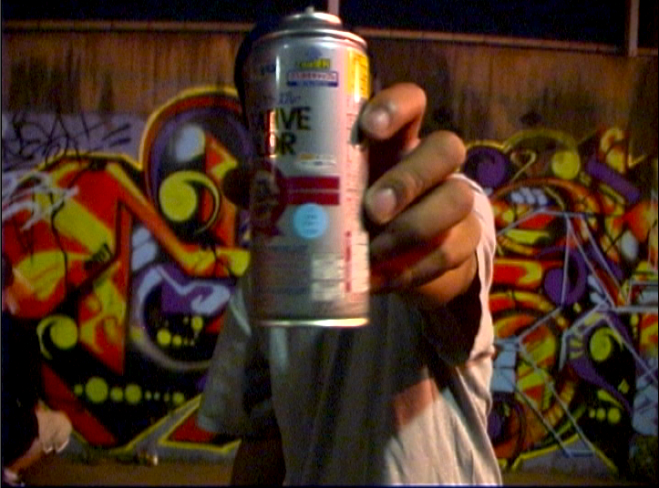

Graffiti is the most controversial of hip hop's elements, as a number of the most notable graffiti pioneers say that they do not consider graffiti to be an element of hip hop, including Lady Pink, Seen, Blade, Fargo, Cholly Rock, Fuzz One, and Coco 144.
Lady Pink says, "I don’t think graffiti is hip hop. Frankly I grew up with disco music. There's a long background of graffiti as an entity unto itself," and Fargo says, "There is no correlation between hip hop and graffiti, one has nothing to do with the other." Hip hop pioneer Grandmaster Flash has also questioned the connection between hip hop and graffiti, saying, "You know what bugs me, they put hip hop with graffiti. How do they intertwine?"